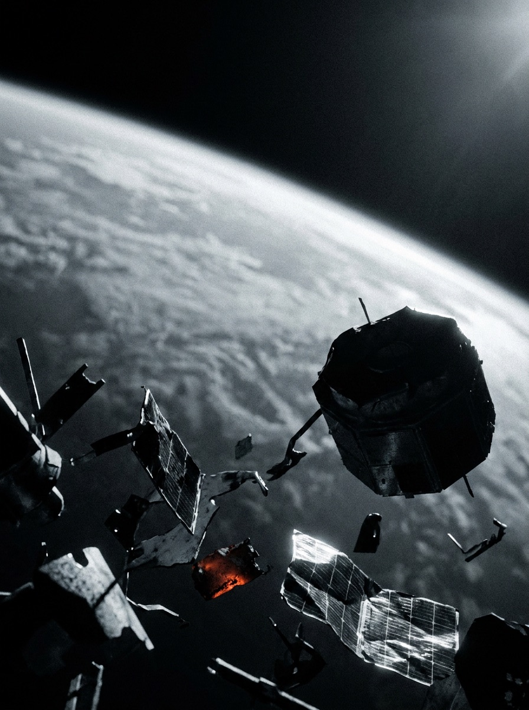

Marketplace de remoção orbital — simulação
LEO · 740–1450 km · 28.000 km/h
Cada detrito em órbita ameaça a Terra.
A órbita baixa virou um depósito de satélites mortos e fragmentos. O OrbitClear conecta quem precisa remover a quem sabe capturar — compare operadores e agende a janela de desórbita antes que a cascata comece.
Explorar o catálogo
No catálogo agora
Ver todos
130M+
fragmentos rastreados em órbita da Terra
28.000 km/h
energia suficiente para destruir um satélite ativo
4 entidades.1 marketplace.
3 agências · 5 operadores conectados
01 — O risco
A síndrome de Kessler
01Uma única colisão gera milhares de novos fragmentos.
02Cada fragmento vira uma nova ameaça em cascata.
03Sem remoção, faixas inteiras de órbita ficam inutilizáveis por décadas.
Não é problema do espaço. É da Terra.
-
01 GPS & navegação
Carros, aviões e toda a logística dependem das constelações de posicionamento que os detritos ameaçam todos os dias.
-
02 Meteorologia & clima
Satélites de observação alimentam a previsão do tempo e o monitoramento climático do planeta inteiro.
-
03 Comunicações
TV, telefonia e banda larga via satélite ficam vulneráveis a interrupções de sinal e blecautes de dados.
-
04 Agro por satélite
A imagem orbital guia plantio, irrigação e safra — a espinha dorsal do agronegócio moderno.
Comece agora
Pronto para limpar sua órbita?
Explore o catálogo de detritos, escolha um operador de captura e agende a primeira janela de desórbita. Sem deixar nenhum fragmento para trás.
Agendar remoção